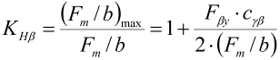
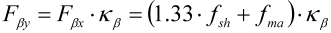
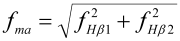
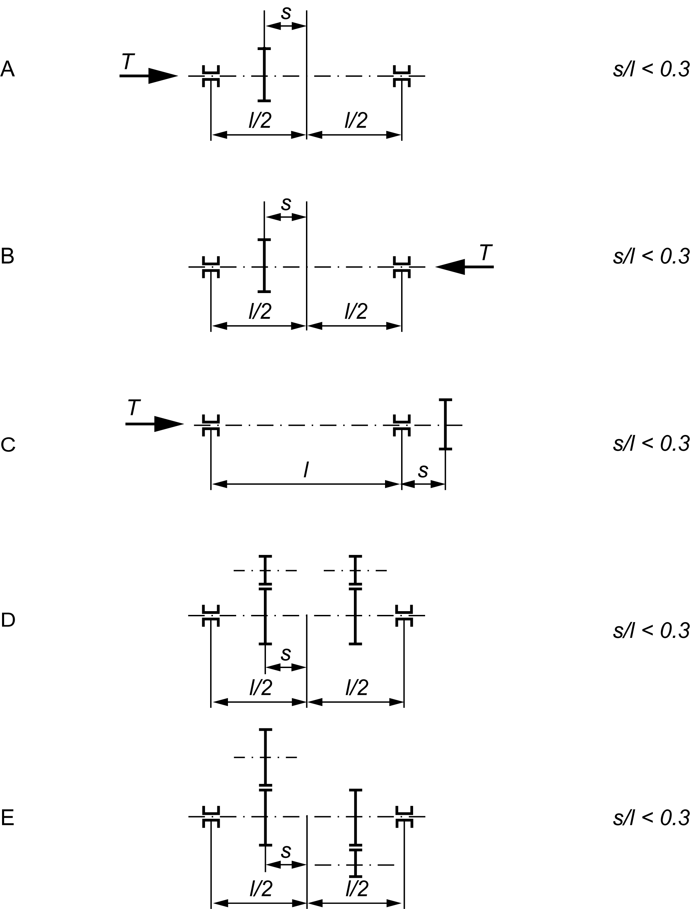
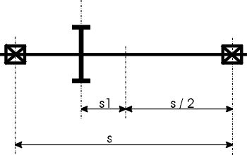

|
|
|


圆柱齿轮副
按 ISO 6336 规定的计算基于对小齿轮变形的近似估计。在许多情况下，这种估计极不准确，通常会导致齿向载荷系数过高。
齿向载荷系数是最大线载荷与平均线载荷之比。用于齿向载荷系数的基本方程对应于标准中的方程 (41)：
*本节中使用的方程编号参见 ISO 6336:2006
|  | (14.4) |
有效齿向偏差 Fßy（参见标准中的方程 (52)）的定义包含了一个以线性化方式给出的变形分量 fsh。方程中的乘数 1.33 表示将线性化的比变形过程转换为真实的抛物线过程——参见方程 (14.5)。
|  | (14.5) |
齿向偏差的制造分量 fma 由制造商规定的公差推导得出。如果使用检查制造质量的标准方法，则可以应用此公式（标准中的方程 (64)）：
|  | (14.6) |
如果您使用过 KISSsoft 的轴计算软件来计算作用平面内由于变形（扭转和弯曲）引起的精确齿向偏差，则可以修正根据标准推导出的近似计算值 f sh，从而更精确地计算宽度系数！ISO 6336 中规定的公式仅适用于实心轴或内径小于外径一半的空心轴。
在方法 C2 中，齿向载荷系数使用以下方程计算：
| 尺寸 | 下拉列表 | 选择 | 方程 | 序号 |
| KHβ | (8.04)/ | |||
| Fβ | (8.08) | |||
| Fβ | 接触区位置 | 未验证或不适用 良好 最优 | (8.26) (8.27) (8.28) | |
| fsh | (8.39) | |||
| fsh0 | 齿线修形 | 无 | 0.023 • γ | (8.31) |
| 齿线鼓形 | 0.012 • γ | (8.34) | ||
| 齿端修薄 | 0.016 • γ | (8.35) | ||
| 全齿线修形 | 0 • γ | a) | ||
| 轻微齿线鼓形 | 0.023 • γ | b) | ||
| 螺旋角修形 | 0.0023 • γ | b) | ||
| 齿线鼓形 + 螺旋角修形 | 0.0023 • γ | b) | ||
| γ | 齿制 | 直齿/斜齿 人字齿 | (8.32) (8.33) | |
| fma | 齿线修形 | 无 | 1.0 • fHβ | (8.51) |
| 齿线鼓形 | 0.5 • fHβ | (8.53) | ||
| 齿端修薄 | 0.7 • fHβ | (8.52) | ||
| 全齿线修形 | 0.5 • fHβ | a) | ||
| 轻微齿线鼓形 | 0.5 • fHβ | b) | ||
| 螺旋角修形 | 1.0 • fHβ | b) | ||
| 齿线鼓形 + 螺旋角修形 | 0.5 • fHβ | b) |
表 15.15：根据 DIN 3990:1987 使用的方程概述
a) 与 DIN 3990 方程 (6.20) 相同
b) 与 ISO 9085 表 4 相同
| 尺寸 | 下拉列表 | 选择 | 值 | 序号 | |
| KHβ | (39)/ | ||||
| Fβ | (43) | ||||
| 未验证或不适用 | (52) | ||||
| Fβ | 接触区点位置 | 良好 | (53) | ||
| 最优 | (56) | ||||
| fsh | (57)/ | ||||
| fma | (64) | ||||
| 无 | 1 / | 1 | |||
| 齿线鼓形 | 0.5/ | 0.5 | 表 8 | ||
| 齿端修薄 | 0.7/ | 0.7 | |||
| B1/B2 | 齿线修形 | 全齿线修形 | 0 / | 0.5 | (56) |
| 轻微齿线鼓形 | 1 / | 0.5 | |||
| 螺旋角修形 | 0.1/ | 1.0 | 表 8 | ||
| 齿线鼓形 + 螺旋角修形 | 0.1/ | 0.5 | |||
表 15.16：根据 ISO 6336:2006 使用的方程概述
小齿轮轴类型
载荷按 ISO 6336:2006 图 13（DIN 3990/1，图 6.8）定义，或轴承布置如下图所示。

图 15.14：按 ISO 6336:2006 图 13 定义的载荷。
按 AGMA 2001 的载荷
s 和 s1 的定义见 AGMA 2001 图 13-3。图 14.23 示出了 AGMA 2001 中所述的轴承布置。

图 15.15：按 AGMA 2001 图 13-3 定义的载荷
Cylindrical gear pairs
The calculation, as specified in ISO 6336, is based on an approximate estimate of the pinion deformation. In many cases, this is extremely inaccurate and usually results in face load factors that are much too high.
The face load factor is the ratio between the maximum and average line load. The basic equation used for the face load factor corresponds to equation (41) in the standard:
*The equation numbers used in this section refer to ISO 6336:2006
| (14.4) |
The effective tooth trace deviation Fßy, see equation (52) in the standard, is defined with the inclusion of a deformation component fsh that is specified in a linearized manner. The multiplier 1.33 in the equation stands for the conversion of the linearized specific deformation progression into the real parabolic progression - see equation. (14.5).
| (14.5) |
The manufacturer component of the tooth trace deviation fma is derived from tolerances specified by the manufacturer. If a standard procedure for checking the manufacturing quality is used, you can apply this formula (equation (64) in the standard):
| (14.6) |
If you have used KISSsoft's shaft calculation software to calculate the exact tooth trace deviation due to deformation (torsion and bending) in the plane of action, you can correct the approximately calculated value f sh, derived from the standard, and therefore calculate the width factors much more precisely! The formula as specified in ISO 6336 only applies to solid shafts or hollow shafts that have an internal diameter that is less than half of the external diameter.
In Method C2, the face load factor is calculated using these equations:
| Size | Drop-down list | Selection | Equation | No. |
| KHβ | (8.04)/ | |||
| Fβ | (8.08) | |||
| Fβ | position of the contact pattern | not verified or inappropriate favorable optimal | (8.26) (8.27) (8.28) | |
| fsh | (8.39) | |||
| fsh0 | flank line modification | none | 0.023 • γ | (8.31) |
| flank line crowning | 0.012 • γ | (8.34) | ||
| end relief | 0.016 • γ | (8.35) | ||
| full flank line modification | 0 • γ | a) | ||
| slight flank line crowning | 0.023 • γ | b) | ||
| helix angle modification | 0.0023 • γ | b) | ||
| flank line crowning + helix angle modification | 0.0023 • γ | b) | ||
| γ | toothing | straight/helical double helical | (8.32) (8.33) | |
| fma | flank line modification | none | 1.0 • fHβ | (8.51) |
| flank line crowning | 0.5 • fHβ | (8.53) | ||
| end relief | 0.7 • fHβ | (8.52) | ||
| full flank line modification | 0.5 • fHβ | a) | ||
| slight flank line crowning | 0.5 • fHβ | b) | ||
| helix angle modification | 1.0 • fHβ | b) | ||
| flank line crowning + helix angle modification | 0.5 • fHβ | b) |
Table 15.15: Overview of equations used according to DIN 3990:1987
a) same as DIN 3990, Equation (6.20)
b) same as ISO 9085, Table 4
| Size | Drop-down list | Selection | Value | No. | |
| KHβ | (39)/ | ||||
| Fβ | (43) | ||||
| not verified or inappropriate | (52) | ||||
| Fβ | position of the contact pattern | favorable | (53) | ||
| optimal | (56) | ||||
| fsh | (57)/ | ||||
| fma | (64) | ||||
| none | 1 / | 1 | |||
| flank line crowning | 0.5/ | 0.5 | Table 8 | ||
| end relief | 0.7/ | 0.7 | |||
| B1/B2 | flank line modification | full flank line modification | 0 / | 0.5 | (56) |
| slight flank line crowning | 1 / | 0.5 | |||
| helix angle modification | 0.1/ | 1.0 | Table 8 | ||
| flank line crowning + helix angle modification | 0.1/ | 0.5 | |||
Table 15.16: Overview of equations used according to ISO 6336:2006
Type of pinion shaft
Load as defined in ISO 6336:2006, Figure 13 (DIN 3990/1, Figure 6.8) or the bearing positioning is shown in the figure below.
Figure 15.14: Load as defined in ISO 6336:2006, Figure 13.
Load according to AGMA 2001
Definition of s and s1 according to AGMA 2001, Figure 13-3. Figure 14.23 shows the bearing positioning as described in AGMA 2001.
Figure 15.15: Load as defined in AGMA 2001, Figure 13-3